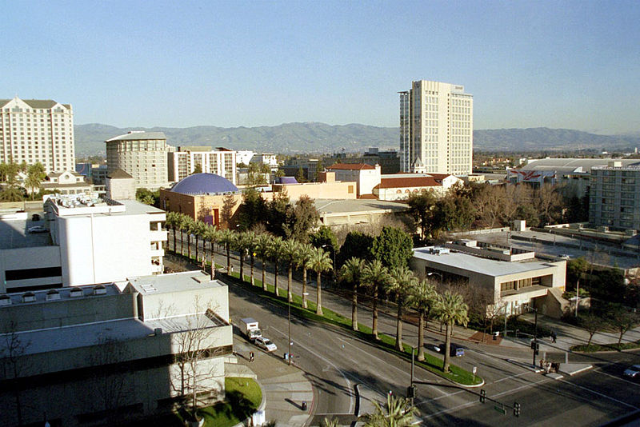
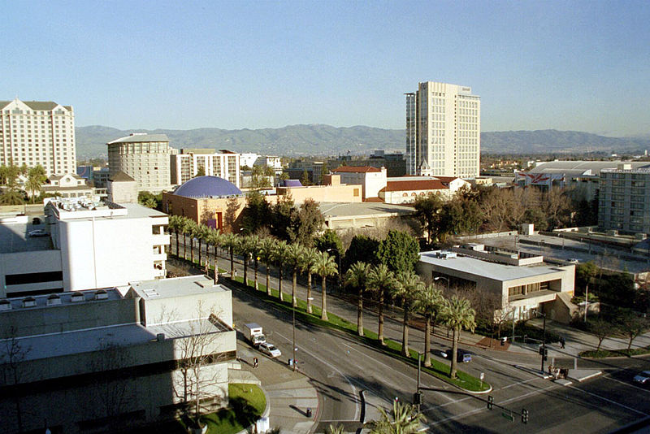

矽谷
矽谷（英語：Silicon Valley），是高科技事業雲集的美國加州聖塔克拉拉谷（Santa Clara Valley）的別稱，位於加利福尼亞州北部、舊金山灣區南部。矽谷的主要部分位於舊金山半島南端的聖塔克拉拉郡（Santa Clara County），主要是該郡下屬的帕羅奧圖市（Palo Alto）到郡府聖荷西市（San Jose）一段長約25英里的谷地；而總範圍一般還包含西南舊金山灣區。

矽谷（英語：Silicon Valley），是高科技事業雲集的美國加州聖塔克拉拉谷（Santa Clara Valley）的別稱，位於加利福尼亞州北部、舊金山灣區南部。矽谷的主要部分位於舊金山半島南端的聖塔克拉拉郡（Santa Clara County），主要是該郡下屬的帕羅奧圖市（Palo Alto）到郡府聖荷西市（San Jose）一段長約25英里的谷地；而總範圍一般還包含西南舊金山灣區。
